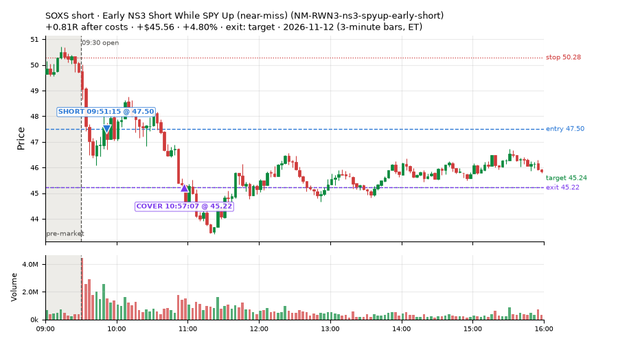
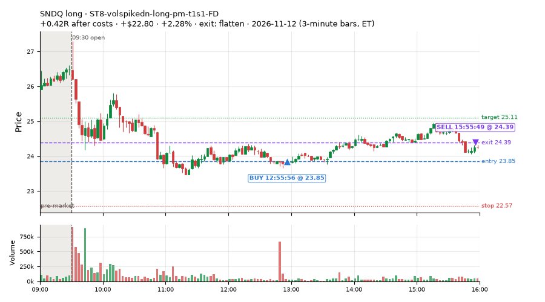
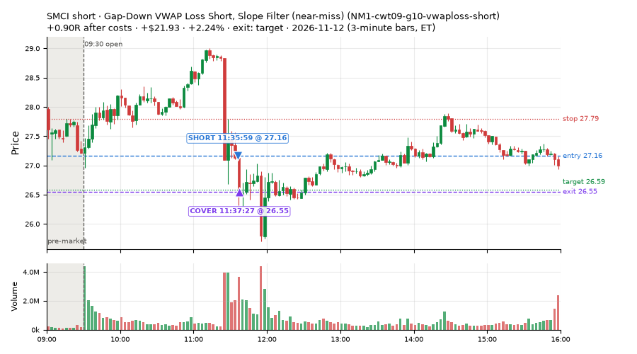
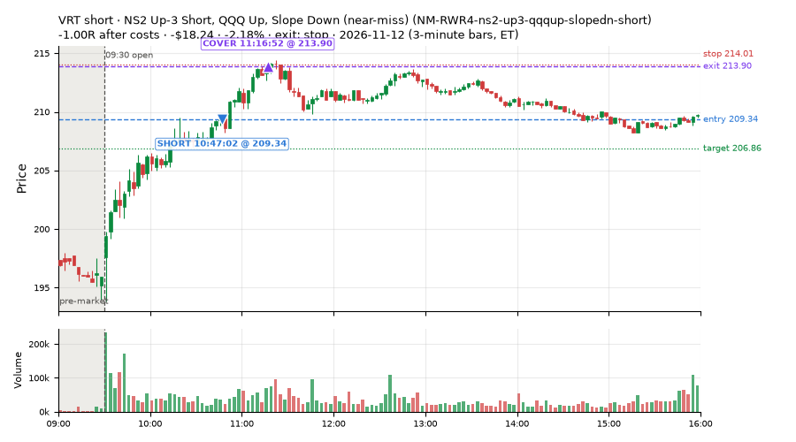
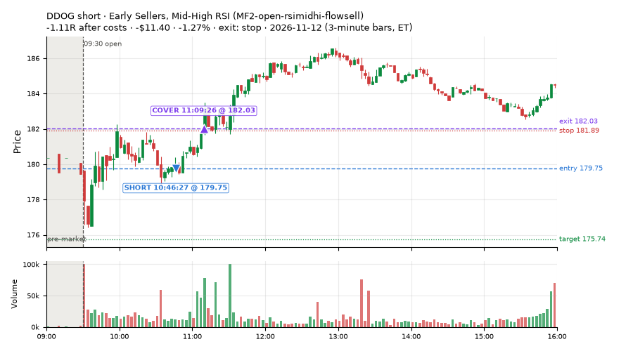
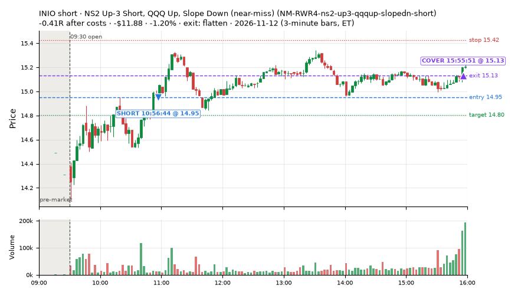

30 trades · win rate 90% · P/L $205.97
PROBATION: no live setup has passed both locked test periods. 10 owner-directed setups added 2026-10-08 (MarcoFlow top 5 + 5 new), untested live. RW6G1 (RW6 + VWAP band guard) added 2026-10-09, probation.

| Symbol | Setup | Side | In | Out | Entry | Exit | Exit reason | % gained | P/L |
|---|---|---|---|---|---|---|---|---|---|
| SOXS | Early NS3 Short While SPY Up (near-miss) (NM-RWN3-ns3-spyup-early-short) | short | 09:51 | 10:57 | 47.50 | 45.22 | target | +4.80% | $45.56 |
| SNDQ | ST8-volspikedn-long-pm-t1s1-FD | long | 12:55 | 15:55 | 23.85 | 24.39 | flatten | +2.28% | $22.80 |
| SMCI | Gap-Down VWAP Loss Short, Slope Filter (near-miss) (NM1-cwt09-g10-vwaploss-short) | short | 11:35 | 11:37 | 27.16 | 26.55 | target | +2.24% | $21.93 |
| Symbol | Setup | Side | In | Out | Entry | Exit | Exit reason | % lost | P/L |
|---|---|---|---|---|---|---|---|---|---|
| VRT | NM-RWR4-ns2-up3-qqqup-slopedn-short | short | 10:47 | 11:16 | 209.34 | 213.90 | stop | -2.18% | $-18.24 |
| DDOG | MF2-open-rsimidhi-flowsell | short | 10:46 | 11:09 | 179.75 | 182.03 | stop | -1.27% | $-11.40 |
| INIO | NM-RWR4-ns2-up3-qqqup-slopedn-short | short | 10:56 | 15:55 | 14.95 | 15.13 | flatten | -1.20% | $-11.88 |






Signal to fill: median 3s, 90th percentile 5s (30 trades). Bars close each minute; the order follows the bar close.
Best excursion (MFE): median 0.42R; worst (MAE) median 0.63R. 17% of trades never got +0.25R in our favour; 0 reached +1R and still closed at or below 0.
| Symbol | Setup | Best R | Worst R | Closed R |
|---|---|---|---|---|
| DDOG | MF2-open-rsimidhi-flowsell | +0.14 | -1.11 | -1.11 |
| VRT | NM-RWR4-ns2-up3-qqqup-slopedn-short | +0.23 | -1.03 | -1.00 |
| INIO | NM-RWR4-ns2-up3-qqqup-slopedn-short | +0.22 | -0.83 | -0.41 |
| SNDQ | ST8-volspikedn-long-pm-t1s1-FD | +0.87 | -0.06 | +0.42 |
| SMCI | NM1-cwt09-g10-vwaploss-short | +1.18 | -0.28 | +0.90 |
| Entry time | Trades | Win | Avg R | P/L |
|---|---|---|---|---|
| 09:50-10:30 | 1 | 100% | +0.81 | $45.56 |
| 10:30-11:30 | 26 | 88% | +0.17 | $108.00 |
| 11:30-13:00 | 2 | 100% | +0.66 | $44.73 |
| 13:00-14:00 | 1 | 100% | +0.41 | $7.68 |
| Setup | Trades | Win | Avg R after costs | Adj R (net of SPY) | Avg R ex-market (all sessions) | P/L |
|---|---|---|---|---|---|---|
| * Oversold Pop with Breadth Turning Up (near-miss) (LD1-ns1-breadthup-t05s1-long) | 1.0 | 100% | +0.41 | +0.34 | – | $8.52 |
| Early Sellers, Mid-High RSI (MF2-open-rsimidhi-flowsell) owner-directed; holdouts once: Sep-Oct -0.108R n41, Apr-Jun +0.046R n171 | 1.0 | 0% | -1.11 | -0.74 | -0.35 (beta -1.70, n 12) | $-11.40 |
| Early NS3 Short While SPY Up (near-miss) (NM-RWN3-ns3-spyup-early-short) | 1.0 | 100% | +0.81 | +0.85 | +0.94 (beta -0.34, n 7) | $45.56 |
| NS2 Up-3 Short, QQQ Up, Slope Down (near-miss) (NM-RWR4-ns2-up3-qqqup-slopedn-short) | 24.0 | 92% | +0.21 | +0.20 | +0.18 (beta -0.29, n 27) | $110.88 |
| Gap-Down VWAP Loss Short, Slope Filter (near-miss) (NM1-cwt09-g10-vwaploss-short) | 1.0 | 100% | +0.90 | +0.89 | – | $21.93 |
| ST8-volspikedn-long-pm-t1s1-FD | 2.0 | 100% | +0.41 | +0.57 | -0.07 (beta +0.69, n 16) | $30.48 |
Market direction (SPY, beta 1) accounted for $-8.22 of today's $205.97; the rest ($214.19) came from the setups themselves. Avg R net of SPY: +0.24 (incl. a hedge leg's cost; report only).
11 setups live today. Today: 54 signals, 30 taken, 0 lost because another setup held the symbol (0%). Since 2026-11-05 (6 sessions): 391 signals, 102 taken, 1 lost to other setups (0%). Peak open positions today 25 of 200 slots. Earnings blackout removed 576 symbols before scanning.
Simulated playing time (not live): 289 what-if trades of signals not taken, avg -0.10R, 50% winners; of them 1 lost to another setup (avg +0.23R).
Silent: IDX1-qqq100-0955-TQQQ-hold, LD3-st2-idxturn-t05s1-long, IDX2-spy075-0945-3x-trail, IDX5-spy050-0945-3x-trail, LD4-st4-breadthup-t1s05-long, LD8-spy-dip030-breadthturn-spxl-holdtr-long
| Prio | Setup | Today sig / taken | Sessions | Signals / taken / trades | Taken/day | Expected/day | Lost to other setups | Lost to (setup n) | Top skip reasons | SIMULATED: not-taken n / avg R / win | Verdict |
|---|---|---|---|---|---|---|---|---|---|---|---|
| 1 | Index Dip Bounce 1 TQQQ (hold) IDX1-qqq100-0955-TQQQ-hold | 0 / 0 | 6 | 0 / 0 / 0 | 0.00 | – | 0 | – | – | 0 / – | silent no signals in 6 session(s); no expected rate on file |
| 2 | * Oversold Slope Turn after an SPY Dip-Turn (near-miss) LD3-st2-idxturn-t05s1-long | 0 / 0 | 6 | 0 / 0 / 0 | 0.00 | – | 0 | – | – | 0 / – | silent no signals in 6 session(s); no expected rate on file |
| 3 | * Oversold Pop with Breadth Turning Up (near-miss) LD1-ns1-breadthup-t05s1-long | 1 / 1 | 6 | 3 / 2 / 2 | 0.33 | – | 0 | – | spread / quote / size 1 | 1 / -1.06R / 0% | slow 1.7 entries/week; ~36 weeks to 60 trades |
| 4 | Gap-Down VWAP Loss Short, Slope Filter (near-miss) NM1-cwt09-g10-vwaploss-short | 5 / 1 | 6 | 52 / 2 / 2 | 0.33 | – | 0 | – | not shortable / shorts off 47, spread / quote / size 2, other 1 | 50 / -0.07R / 52% | slow 1.7 entries/week; ~36 weeks to 60 trades |
| 5 | Early NS3 Short While SPY Up (near-miss) NM-RWN3-ns3-spyup-early-short | 4 / 1 | 6 | 19 / 7 / 7 | 1.17 | – | 0 | – | not shortable / shorts off 6, spread / quote / size 5, other 1 | 12 / +0.69R / 83% | slow 5.8 entries/week; ~10 weeks to 60 trades |
| 6 | ST8-volspikedn-long-pm-t1s1-FD ST8-volspikedn-long-pm-t1s1-FD | 2 / 2 | 6 | 22 / 16 / 16 | 2.67 | 1.05 | 1 | MF2-open-rsimidhi-flowsell 1 | spread / quote / size 3, other 2, symbol held by another setup 1 | 6 / -0.04R / 67% | slow 13.3 entries/week; ~4 weeks to 60 trades |
| 7 | RSI Collapse Dip Buy, Nasdaq-below-VWAP only (all day) ST7Q-rsi50dn-qqqbelowvwap-long-t1s1-FD | 0 / 0 | 6 | 7 / 3 / 3 | 0.50 | – | 0 | – | spread / quote / size 3, other 1 | 4 / -0.54R / 25% | slow 2.5 entries/week; ~24 weeks to 60 trades |
| 8 | Early Sellers, Mid-High RSI MF2-open-rsimidhi-flowsell | 2 / 1 | 6 | 50 / 12 / 12 | 2.00 | 1.30 | 0 | – | per-setup cap 19, spread / quote / size 11, not shortable / shorts off 5 | 38 / -0.63R / 16% | slow 10.0 entries/week; ~6 weeks to 60 trades |
| 9 | NS2 Up-3 Short, QQQ Up, Slope Down (near-miss) NM-RWR4-ns2-up3-qqqup-slopedn-short | 39 / 24 | 6 | 46 / 27 / 27 | 4.50 | – | 0 | – | spread / quote / size 13, not shortable / shorts off 4, other 2 | 19 / +0.17R / 84% | ok 22.5 entries/week |
| 10 | Backside Lower-High Short CWT04-backside-lh-a15-short | 0 / 0 | 6 | 4 / 0 / 0 | 0.00 | – | 0 | – | not shortable / shorts off 4 | 4 / +0.55R / 50% | slow no entries yet |
| 11 | Stretched Below VWAP Bounce (far) CWT13-vwapstretch-z075-long | 1 / 0 | 6 | 116 / 23 / 23 | 3.83 | – | 0 | – | per-setup cap 67, spread / quote / size 15, other 11 | 93 / -0.12R / 43% | ok 19.2 entries/week |
Every trade is attached as a CSV you can open and edit in Excel or Google Sheets. Live page: https://misiti15.github.io/MCF/live/